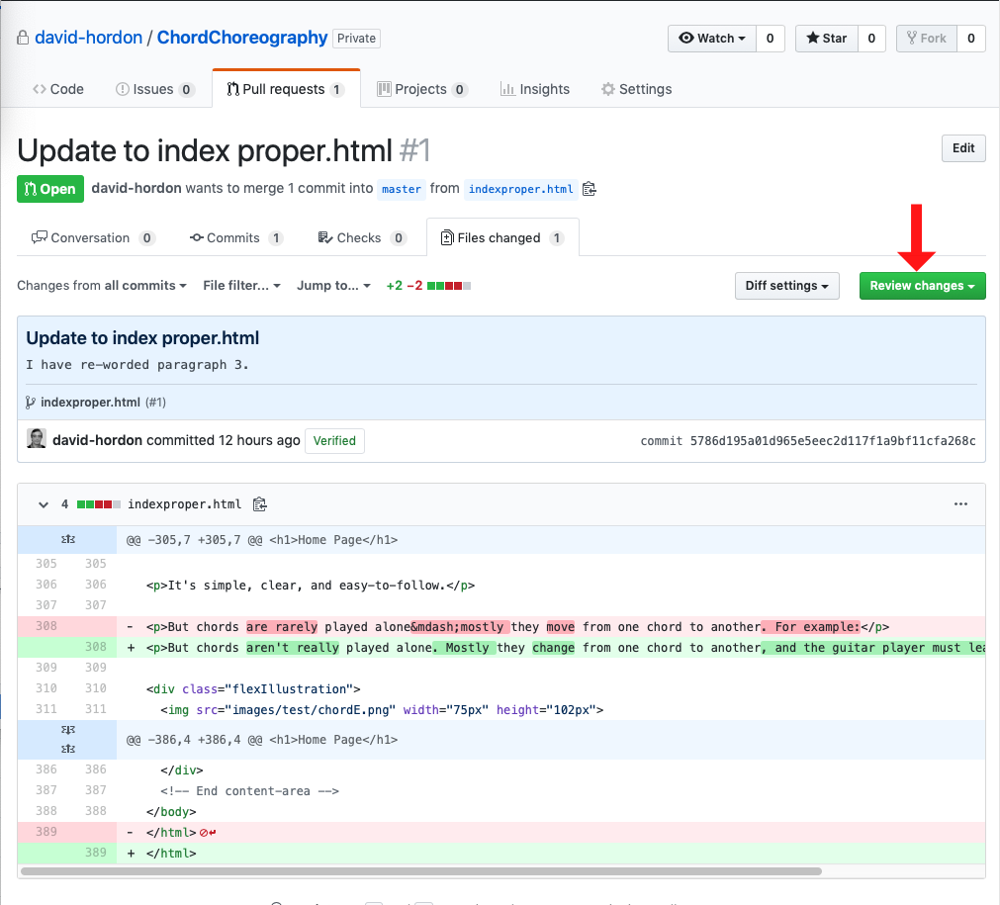

Learning Git and GitHub—Still Fumblin', Bumblin' On!
Site Navigation
Pull Request Navigation
- Initiating a Pull Request
- Contributing Comments to Pull Request
- Navigating the 'Pull Request' Pages and Tabs
- The Repository Main Page
- The 'Pull requests' Page
- The 'Branches' Page
- The 'New pull request' Page
- The 'Conversation' Page
- The 'Files changed' Page
- The 'Compare changes' Page
- The 'Comparing changes' Page
- The 'Update to <file>' and Merge pull request Page
- Merging a Pull Request
Intro—Getting Started in GitHub
GitHub Help and Tutorials
EARLY DRAFT
If you're a complete beginner, the very best help you'll get from GitHub is available from the Dashboard opening page. Rather than click the New project, click instead the Read the Guide. Take the 'Hello World' tutorial, and then follow the links at the bottom of that page. It is the very best starting point available.
This quick tutorial from GitHub Hello World is well worth a look at. You'll find it om your GitHub Dashboard. Click the green box,Read the guide.
Leading on from the above tutorial, and using an interactive version of the diagram above that, Understanding the GitHub flow offers readable explanations in a rather fun way—click the dangling double circles or the left/right arrows to navigate through the various stages.
Possibly useful collection of GitHub Guides.
The GitHub YouTube Channel.
The GitHub Learning Lab. And this tab, Courses. And this tab, Learning Paths—which includes the YouTube Tractors.
The GitHub Learning Lab docs.
TopThe GitHub Branch
Fig. #—The branch Journey
Fig. #—Creating a branch
Fig. #—Making commits
Fig. #—The pull request
Fig. #—Reviewing a branch

Fig. #—Deploying a branch
Fig. #—Making a Merge
Top
The Pull Request
Fig. #—The pull request stage
A pull request is not a request to download or 'pull' anything on to the sender's device. Actually, it's the opposite, asking the recipient to download or 'pull' something on to their's. It might better have been called a 'push request.'
TopNavigating the 'Pull Request' Pages and Tabs
make branch asking either for a general review and comments, or for a review pending a possible merge to the master – or even to another branch.
To get back to here, click the Back link.
For this exercise I created a branch of the index.html file, which I then edited. Along with the first commit I also included a description, "Suggested edit to index.html." It's useful to know this because GitHub uses this description to name several important links and pages. So, when you see Suggested edits to index.html, remember it's not GitHub's default title, but simple quoting back my description text.
So far as I presently understand, when it comes to responding to pull requests, there are eight pages we need to know about. I'm not certain what the official names for these pages are, but I've made up what I hope (for now at least) are useful, if cumbersome, descriptive titles for them.
- An Intricate Network of Paths
- The 'Repo Front Page'
- The 'Pull requests' Page
- The 'branches' Page
- The 'Compare changes' Page
- The 'Comparing changes' Page
- The 'Conversation' Page
- The 'Files changed' Page
- The 'Review changes' Page
There are several routes to all of these pages which I've begun to explore—but only begun to explore. Each route starts from what I am calling the Repo Front Page and details the path then followed to arrive at each destination page. These routes are given above each full-size rendition of a particular the page. If you know of other paths, please let me know.
The pages are shown below in miniature: four-to-the-line, for a quick eyeful; and then, immediately below, two-to-the-line, where they are a little easier to identify.
Four-to-the-line


Two-to-the-line
Fig. #—Navigating a Labyrinthine Network of Paths
Top Back
The Full-Size Pages
The Repo Front Page
To return to Repo Front Page click: ChordChoreography or Code
Top
Back
The Repo Front Page 'Switch branches/tabs' Pane
Repo Front Page: > Branch: master > index.html
Top BackThe Pull requests Page
This page is linked directly from the Repo Front Page.
The New pull request green button links directly to the Compare Changes page. The Suggested edit to index.html link—which, please remember, is my description, written along with the first commit—links directly to the Conversation tab.
Route to Pull requests page
Repo Front Page > Pull requests
Top BackThe branches Page
This page is linked directly from the Repo Front Page.
I've yet to explore the Pull requests link on from this page, but I strongly suspect it will be the same as above. The Open green button—either button—takes us directly to the Suggested edit to index.html/Conversation tab.
Route to branches page
Repo Front Page > branches
Top BackThe Compare changes Page
This page is linked directly from the Repo Front Page.
I'm not entirely sure what this page does, but I guess it let's you 'Compare and review just about anything.'
The index.html link goes directly to the Comparing changes page—see next.
Route to Compare changes page
Repo Front Page > New pull request
Repo Front Page > Pull request > New pull request
Top
Back
The Comparing changes Page
Route to Comparing changes page
Repo Front Page > New pull requests > index.html
Repo Front Page > New pull requests > compare: master > index.html
Comparing pages when there's nothing to compare.
Top BackThe Conversation Tab/Page
'All roads lead to Rome.'
This page is actually more a Tab than a Page. The host page is Suggested edit to index.html which, you may recall, is not a GitHub page title, but a quote back of my original description. If you look below that title, you will see four tabs: Conversation, Commits, Checks and Files changed. (But only the first and last of these concern us here.)
This is an important page because it's where all previous discussions about a Pull request are to be found and viewed. Further, a new comment can be added. Or a decision to Merge pull request made.
But hold off for a moment, please, because if you move from the default Conversation tab you're on right now, and choose the Files changed tab(up next) there are one of three qualifiers you can add to your comments, as well as the ability to flick between your comments and the edits you're commenting on.
Routes to Conversation tab/page
Repo Front Page > branches > Open
Repo Front Page > Branch: master > index.html > View #2
Repo Front Page > Pull requests > Suggested edit to index.html
Repo Front Page > Pull requests > New pull request > index.html > View pull request
Repo Front Page > New pull request > index.html > View pull request
Repo Front Page > New pull request > compare: master > index.html > View pull request
Top BackThe Files changed Tab/Page
Route to Files Changed tab/page
Repo Front Page > branches > Open > Files changed
Repo Front Page > Branch: master > index.html > View #2 > Files changed
Repo Front Page > Pull requests > Suggested edit to index.html > Files changed
Repo Front Page > Pull requests > New pull request > index.html > View pull request > Files changed
Repo Front Page > New pull request > index.html > View pull request > Files changed
Repo Front Page > New pull request > compare: master > index.html > View pull request > Files changed
Top
Back
The Review changes Pane/Page
Repo Front Page > branches > Open > Files changed > Review changes
Route to Review changes pane/page—Repo Front Page (RFP)
RFP > branches > Open > Files changed > Review changes
RFP > Branch: master > index.html > View #2 > Files changed > Review changes
RFP > Pull requests > Suggested edit to index.html > Files changed > Review changes
RFP > Pull requests > New pull request > index.html > View pull request > Files changed > Review changes
RFP > New pull request > index.html > View pull request > Files changed > Review changes
RFP > New pull request > compare: master > index.html > View pull request > Files changed > Review changes
Top Back
Contributing Comments to a 'Pull request'
There are at least two places where we can review edits and pass comments on any branch that has initiated a pull request: the Update to <file> page (see fig. 5); and the Comparing changes page (see figs. 11 and 16). Route 1 takes you, via the pull request tab to the former. Routes 2 and 3 take you to the comparing changes page, but from different starting points.
If you want to go to the comparing changes page, use route 3—it takes you directly there—wereas route 2 arrives at the same place by a much more circuitous route.
Be aware, there's a compare changes page and a comparing changes. Two seperate pages.
The comparing changes page
Fig. 1—The Overview Page of a Repository
Route 1—The 'Pull request' Tab
Fig. 2—'Pull request' tab in the overview page
Fig. 3—'Update to <file>' link in the pull request page
Fig. 4—'View <branch> edits link in the update to <file> page

Fig. 5—The 'Update to <file>' page and 'Review changes' link
Fig. 6—The edits page and 'Review changes' link

Route 2—
Fig. 7—'Pull request' tab in the overview page
Fig. 8—'Pull request' tab in the overview page

Fig. 9—The 'Compare changes' Page

Fig. 10—The 'compare: master' Dropdown Menu

Fig. 11—The 'Comparing Changes' Page
Fig. 12—'Pull request' tab in the overview page
Route 3—'New pull request' Dropdown
Fig. 13—'New pull request' dropdown in the overview page
Fig. 14—The 'Compare changes' Page
Fig. 15—The 'compare: master' Dropdown Menu